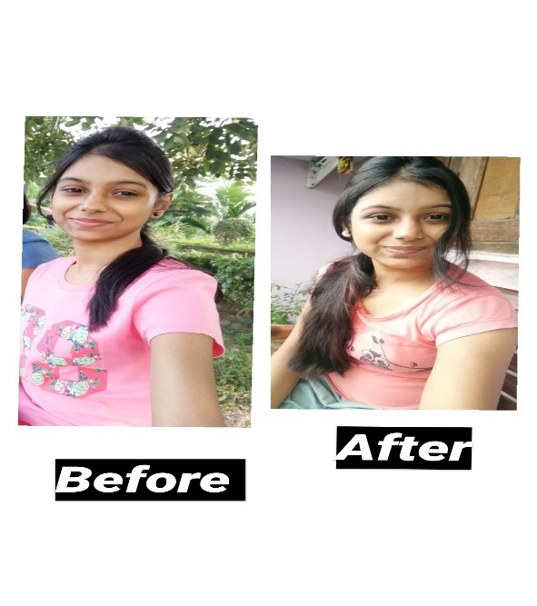
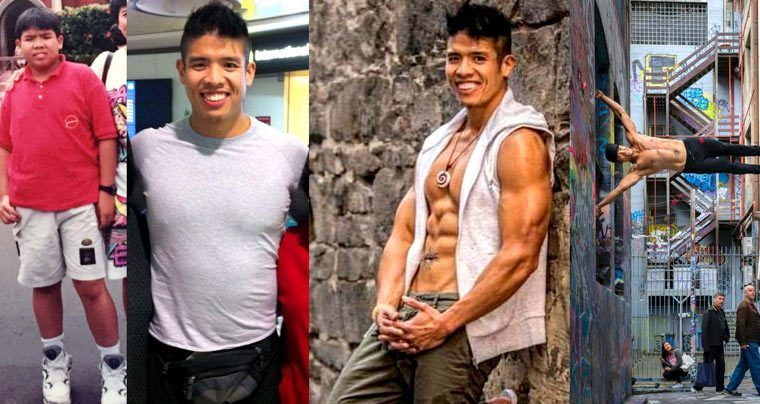

|
I used to be overweight when I was in high school until I finally decided to reach out to ShapeUp in June 2021. From June 2021 to October 2021, through a strict diet and exercise, I’ve gone from a size 24 to a size 10/12. I cried. I was so happy. I am glad I didn’t give up and now have the tools needed to maintain my new lifestyle. | ... The webpage provides helpful information and guidance, and most importantly, it’s free. After all those changes, I noticed a lot more attention from men — more smiles, more friendliness, more glances in my direction, etc. Not just from men, but from women as well. I was treated with more respect. I find a lot of guys that have always put me in the “friend” category trying to approach me differently. Perhaps the way I carry myself now is different. I'm more confident, open, and even flirtatious. My life is on a whole new trajectory and anyone can do this, anyone… |
 |
Will Ross is a 27-year-old Sydneysider who recently transformed his body in eight weeks using nothing but a handy app on his phone and a rock-solid diet, and believes it possible for anybody to do. "Eight weeks is not a long time," says Ross. "However, I’ve learnt that it can be more than enough time to redirect mental and physical perceptions about your body. "Thinking back to two months ago, it’s easy to look at my 'before' photo and think, okay, this guy doesn’t really need a body transformation." | ...As Ross explains, over the course of eight weeks he was able to drop 3 percent off his body fat – a change that drastically improved not only how he looked, but his total mental and physical wellbeing. He credits the biggest changes in his physique to what he ate, opting for a relatively low-carb approach that omitted anything that was even slightly processed. "In my opinion, diet was 100 percent the major determining factor in my transformation," says Ross. "I cleaned up my diet immensely by focusing on cutting out carbs and sugars and sticking to the good stuff. I ate predominantly proteins and good carbs through veggies and beans." After eight weeks most of us would be ready to slink into the couch with a tub of ice-cream and say "exercising is not for me" – but Ross says his habits have been changed for life. "I’d say to just find a program or routine that suits your lifestyle and stick to it! The Robards Method worked for me and is a great platform to start if you are looking for a new training method," says Ross. |
|  | While most people look for quick solutions to lose weight, there is an immense amount of hardship that skinny people face as well. From being a victim of name-calling everywhere to not being able to find clothes that fit, being underweight comes with its own set of dilemmas. Duration took: 3 monthsI never thought I'll be able to achieve this in such a short duration and that too without a gym or any heavy types of equipment. | ...
Write down each and everything you eat, whatever you drink, and your workout/activity level, and trust me looking at it before heading to bed will make you want to do better the next day. |
|  | Luke left his childhood ailments behind and improved his fitness The Singapore-born Luke was plagued with chronic asthma, epilepsy, and kidney disease growing up – and the medications he took for these ailments left him borderline obese. Helping himself to 8-10 fried chicken wings each Sunday surely wasn’t helping here, just like the ribeye steak he loved to eat. | ...Staying on a “high protein” diet seemed to be a non-negotiable in his adulthood, especially when he entered the fitness industry as a trainer and bodybuilder. Along with over 2 pounds of animal flesh per day, he was also spending a fortune on supplements, workout pills, and fat burners. Luckily, his vegan wife introduced him to plant-based heroes like John Robbins and Robert Cheeke (a vegan bodybuilder) who opened his eyes and showed him how this diet was more ethical, sustainable, and healthful. Turning vegan for the animals, he was surprised to find his overall muscularity increasing after just one month and even dropping body fat. He tried our vegan diet and exercises and had more energy, a better recovery, less joint issues, and a better skin. In 2013, he competed in the Australian Natural Bodybuilding Championships as a vegan and placed second in his division. |